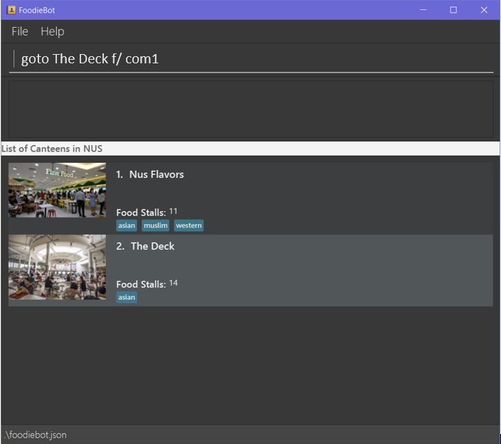
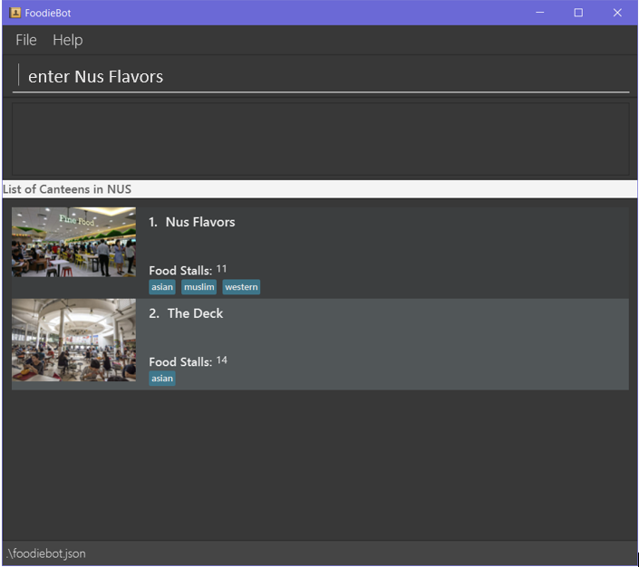
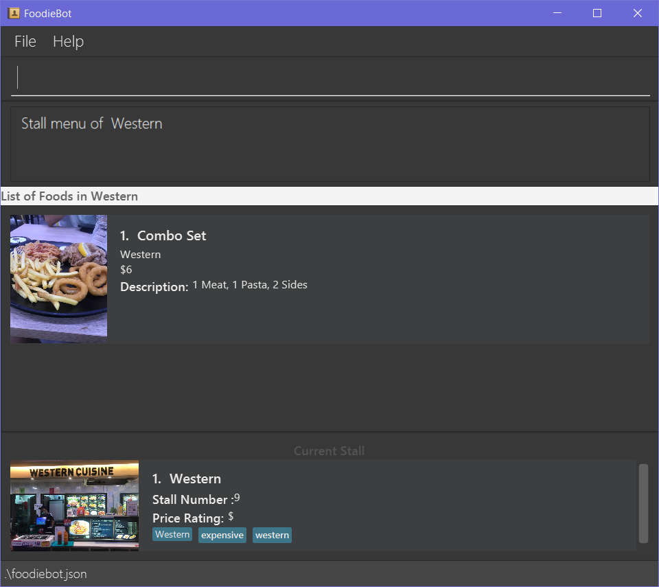
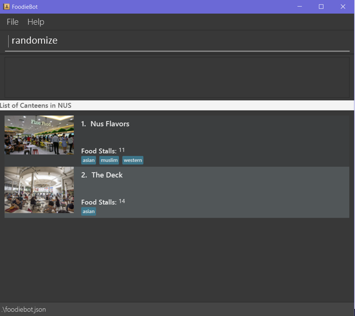
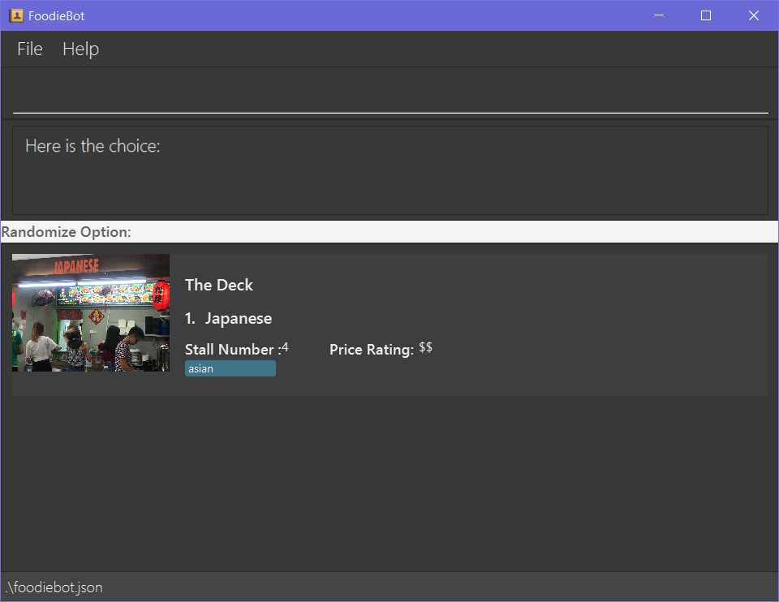
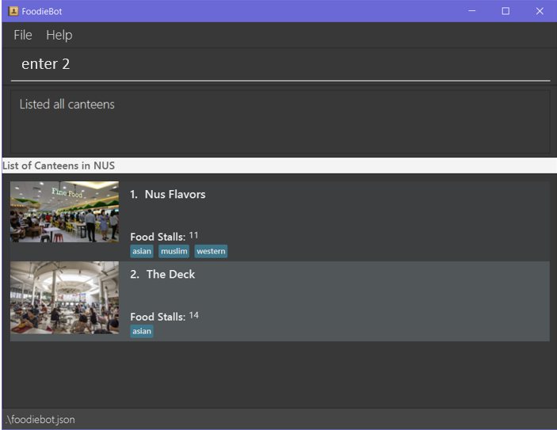
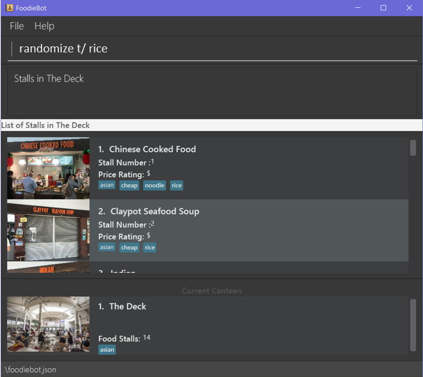
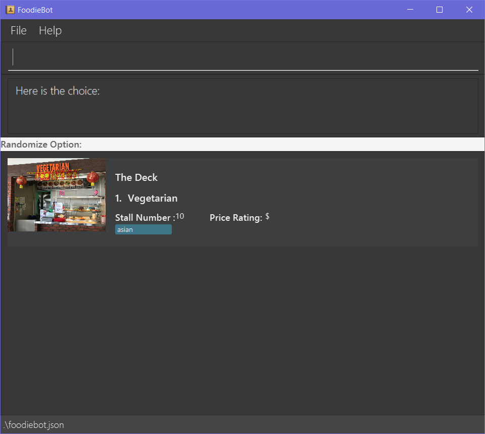
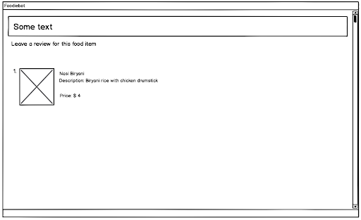

By: FoodieBot Team Since: Feb 2020 Licence: MIT
- 1. Introduction
- 2. About this Document
- 3. Quick Start
- 4. Features
- 4.1. Back Command:
back<Done By: Ignatius> - 4.2. Exit Command:
exit - 4.3. List all Canteens:
list<Done By: Leslie> - 4.4. Go to a Canteen:
goto<Done By: Leslie> - 4.5. View Stalls or Menu:
enter<Done By: Ignatius> - 4.6. Select the Food :
select<Done By: Shaun> - 4.7. Randomize Food Selection :
randomize<Done By: Samantha> - 4.8. Set a Budget :
budget set<Done By: Xavier> - 4.9. View Budget:
budget view<Done By: Xavier> - 4.10. View Expense Report:
report<Done By: Xavier> - 4.11. View Past Transactions:
transactions<Done By: Xavier> - 4.12. Delete a Transaction:
delete<Done By: Xavier> - 4.13. Review Food Items:
review<Done By: Xavier> - 4.14. Rate Food Items:
rate<Done By: Xavier> - 4.15. Set Food Items as Favorites:
favorites set<Done By: Leslie> - 4.16. View Favorited Food Items:
favorites view<Done By: Leslie> - 4.17. Remove Favorite Food Items:
favorites remove<Done By: Leslie> - 4.18. Filter Canteens, Stalls or Food:
filter<Done By: Ignatius>
- 4.1. Back Command:
- 5. FAQ
- 6. Glossary <Done By: Shaun>
- 7. Command Summary <Done By: Shaun>
1. Introduction
FoodieBot is an all-in-one application created for NUS students, staff and visitors. Designed primarily to help with your everyday campus dining needs, FoodieBot has something to offer to everyone. Whether you need a random suggestion of what to eat, directions to get to the canteen, help in planning your budget for the week, or just want to see what each canteen has to offer, FoodieBot is here to provide for your needs.
2. About this Document
<Done By: Samantha>
2.1. Symbols and Notations Used
The following are the symbols and formatting used in this document:
|
Note
|
This symbol indicates important information. |
|
Tip
|
This symbol indicates tips for the particular feature. |
list - A grey highlight (called a mark-up) indicates that this is a command that can be typed into the command box and executed by the application.
The command box location can be seen in the diagram below.
2.2. Definition of Common Words Used
- Context
-
There are some commands that are only permissible at certain states of the application. For instance, the
reviewandratecommands are only allowed after navigating to the transactions screen. We refer to this state as a context. Commands which specify a context which they are used in generally cannot work outside of that context. However, some commands are less particular about the context which they run in such as in the case of theentercommand which can run in both the Main, Canteen and Stall contexts. - GUI
-
Graphic User Interface is a type of visual interface that allows users to interact with.
- Index
-
It is a number that is linked to the item of the list An index is limited to the maximum number of items shown in the list, the item does not exist if an invalid index is specified in commands that use an index.
2.3. How to Use this Document
Section 4. Features will introduce you to the commands for the application.
3. Quick Start
-
Ensure that you have Java 11 or above installed in your Computer.
-
Download the latest foodiebot.jar here.
-
Copy the file to the folder you want to use as the home folder for your FoodieBot.
-
Double-click the file to start the app. The Graphical User Interface(GUI) similar to the image shown below should appear in a few seconds.
-
Type the command in the command box and press Enter to execute it.
e.g. typinghelpand pressing Enter will open the help window.
|
Tip
|
Some example commands you can try are listed below: |
-
list: Lists all canteens or return to the main page. -
enter The Deck: Display all the stalls location within The Deck. -
back: Go back to the previous view -
goto The Deck f/ COM1: Display direction to go to deck from COM1. -
exit: the exit command will close FoodieBot
4. Features
Command Format
-
Words in
UPPER_CASEare the parameters to be supplied by the user e.g. inbudget set w/ AMOUNT,AMOUNTis a parameter which can be used asbudget set w/ 9.50 -
Items in square brackets are optional entries e.g
report [w/DATE]can be entered asreport [w/ 12-02-2020]or asreport. -
Canteen names, stall names and commands are case sensitive.
4.1. Back Command: back <Done By: Ignatius>
If you want to return to your previous screen, just key in back and it’ll bring you back
(at least if a previous screen exists).
Format: back
4.2. Exit Command: exit
When you’re done using the application, type exit into the command box to close the application.
Format: exit
4.3. List all Canteens: list <Done By: Leslie>
Curious to discover the range of dining options on campus? Simply enter list into the command box
and FoodieBot will show you all the fabulous canteens on campus for you to browse at your leisure.
Format: list
Parameters:
-
[f/BLOCK_NAME]- If you want to view the canteens by their distance from the place specified byBLOCK_NAME, this is the tag for you. This will list the canteens in order of increasing distance fromBLOCK_NAME.
|
Tip
|
You can also type list into the command box to return to the main page. This is a handy shortcut if
you ever forget which Context you’re in.
|
4.4. Go to a Canteen: goto <Done By: Leslie>
If you’re ever lost in NUS, worry no more! The goto function can conveniently tell you the directions to the canteen you wish to
go to from your current location which you have indicated. It even includes a map image to aid you with understanding
the directions even easier.
|
Note
|
This function will only work on the main page. |
Format: goto CANTEEN_NAME f/ CURRENT_LOCATION
Parameters:
-
CANTEEN_NAME: The canteen name -
CURRENT_LOCATION: The nearest block from your current location
These CURRENT LOCATION(s) are available for directions:
-
com1
These CURRENT LOCATION(s) will be added in future releases
(but are recognised as valid locations):
-
pgpr
-
uhc
-
utown
|
Note
|
CANTEEN_NAME and CURRENT_LOCATION field has to be one of the suggestions. Otherwise an error message will be displayed telling the user to provide a valid CANTEEN_NAME and CURRENT_LOCATION.
|
- Example
-
Let say you wish to go to The Deck from your current location at com1.
-
Enter the canteen which you want to go to and your current location in this format on the main page
goto The Deck f/ com1. -
Then press Enter. This will give you a clear image and instruction on how to get to canteen from the nearest bus stop.
4.5. View Stalls or Menu: enter <Done By: Ignatius>
Curious about the details of a particular canteen or stall? The enter command allows you to find out
all the information you want about the canteen or stall you are interested in.
Format: enter STALL_NAME/ CANTEEN_NAME/ INDEX
Parameters:
-
INDEX: An index that corresponds to a particular canteen. This index is located beside the canteen name. -
CANTEEN_NAME: The canteen name has to be from one of the canteens displayed. Partial names are not allowed. -
STALL_NAME: The stall name has to be from one of the stalls displayed. Partial names are not allowed.
|
Note
|
Information about the types of food sold at the stall, the rating of the stall and various other things will be implemented in v2.0. The stall’s rating is determined from the user’s past experiences of the food items which were selected (find out more in Section 4.13: Rate Food Items). |
- Example
-
You wish to see the stalls available in Nus Flavors.
-
On the main screen, type
enter Nus Flavorsorenter 1into the command box. -
This will display the list of stalls that Nus Flavors has. At the bottom of the screen, there will be a display box which displays the current canteen which you have entered.

-
If you wish to view stalls in another canteen you can enter
backinto the command box. This will bring you back to the main page.
-
-
If you wish to see the menu of a stall, you can key in
enteragain. Let us see what the Western stall has on their menu. You can key inenter Westernorenter 9. Don’t forget to hit the enter after you are done typing. -
This will show you the menu of the Western stall. For each food item, the name, the cost and the description of the food item will be given. At the bottom of the screen, there will also be a display box showing the current stall which you have entered.
-
Similarly, you can also enter
backto return to the Nus Flavor canteen screen or enterlistif you wish to return to the main screen.
-
4.6. Select the Food : select <Done By: Shaun>
Finally decided on a food item after browsing the countless food options at NUS, ordered it and want to record
down your dining experience? The select function is here allowing you to save your selected food
into your past transactions to help you track your history of food consumption.
Format: select
Parameters:
-
INDEX: Select the food with the given index from the list displayed on the GUI -
FOOD_NAME: Select the food with the given name from the list displayed on the GUI
|
Note
|
If a budget has been set up, the price of the selected food will be automatically deducted from your budget. This helps you keep track of how much money you have spent and how much more you can spend. Nifty, isn’t it? |
- Example
-
You have decided what you want to eat and you want to save that item to update your transaction history.
-
Ensure that you are on the menu screen of the stall. If you do not know how to get to the menu you can refer to the section above or here.
-
Continuing on from the example from the
entercommand above, we are currently in the Western stall. -
Enter
select Combo Setorselect 1into the command box. -
This will display the cost of the item, the remaining amount that you have and the amount you are left with to spend for the day.
-
4.7. Randomize Food Selection : randomize <Done By: Samantha>
Bamboozled by the countless dining options at NUS or simply bored of going to the same boring old canteens to
eat everyday? randomize is here to help you to generate a random option when you cannot decide on what to eat or
if you just want to spice up your culinary experience in NUS.
Format: randomize
Parameters:
-
[c/ CANTEEN_NAME]- Produce a randomized list of foods from foods available at the particular canteen . -
[t/ TAG]- Randomize based on foods which are tagged with the tag provided.
- Example
-
On a day where you cannot decide on what to eat but you don’t mind travelling anywhere on campus, you suddenly remember that FoodieBot has a convenient
randomizefunction.
-
Just enter
randomizeinto the command box on the main screen. -
This will generate 1 option for you with the details of the canteen name that this stall belongs to, the stall name, the stall number, the price rating and the tag if there are any.
-
If you like the option that you see, you can key in
enter Japaneseorenter 1to be redirected to the stall to see the menu. -
If you do not like the option, you can enter
randomizeagain to be given another option.
-
- Example
-
What if you want to get a random option only from a particular canteen (eg. The Deck) that you are at or an option based on what you crave (eg. spicy food)?
-
If you want to get a random option based on the canteen (eg. The Deck), you can enter
randomize c/ The Deckon the main screen. This will display an option that is based on the canteen you want (in this case The Deck). -
If you want to get a random option based on your craving (eg. spicy), you can enter
randomize t/ spicyon the main screen. This will display a food which has the spicy tag. -
OR similarly, you can also enter the canteen first before getting a random option.
-
In the command box key in
enter The deckorenter 2to get the list of stalls available in The Deck. -
After that enter
randomizeorrandomize t/ TAGto get an option.
Let’s try getting a food option that has rice from The deck -
This will display an option if there is a stall option that has that tag. Otherwise it will display a message in the feedback box.

-
4.8. Set a Budget : budget set <Done By: Xavier>
Have problems keeping track of your spending? The budget set command allows you to set up
a daily, weekly or monthly budget to help you track how much money you have left to spend. This budget
can be changed anytime you want but please note the consequences in the box below!
|
Note
|
Changing the budget will reset the budget overview for the current budget cycle. For example, if you have $5 remaining from a weekly budget of $20, setting a new monthly budget of $150 will update your current budget settings to the new one, but at the same time resets the start date of the cycle, your remaining budget, as well as an overview of your spendings in your budget. (But not to worry, all of your transactions are still saved!) |
|
Note
|
When you set a weekly or monthly budget, you get to see an average daily budget available to spend over 5 days (if weekly) or 20 days (if monthly). Sometimes you may want to comfort yourself, so it’s still okay to spend more than the daily average budget, as long as your remaining budget doesn’t reach $0 before the end of the week/month! |
Format: budget set PERIOD AMOUNT
Parameters:
-
AMOUNT: The maximum amount available to spend for the given time period. -
PERIOD: The length of the cycle that a budget is effective for and when it will refresh.List of values for
PERIODare:-
d/- Daily -
w/- Weekly -
m/- Monthly
-
|
Note
|
PERIOD field has to be one of the above suggestions.AMOUNT field has to be numeric (with or without decimal places).Otherwise an error message will be displayed requesting a correct type to be provided. |
4.9. View Budget: budget view <Done By: Xavier>
Curious about your budget this cycle, how much you have spent and how much you have left? budget view allows
you to see all your spending as well as the amount of money you have left to spend.
Format: budget view
4.10. View Expense Report: report <Done By: Xavier>
If you want to see how much you have spent over a period of time, view a beautifully designed report of your
past expenses with the report command.
|
Note
|
This command has several variations to choose from! Also, the date can be delimited with '-', '.' or '/',
as long as your date format follows a generic DD/M/YY or D-M-YYYY format (e.g. 11/4/20, 3-6-2019)! D - day M - month Y - year |
Format:
-
report -
report [f/FROM_DATE] [t/TO_DATE] -
report [w/DATE] -
report [m/MONTH] -
report [y/YEAR]
Parameters:
-
[f/FROM_DATE] [t/TO_DATE]- Generates report fromFROM_DATEuntilTO_DATE.-
Example:
report f/ 12-02-2020 t/ 30-04-2020
-
-
[w/DATE]- Generates report for the week (Monday-Sunday) of the input date.-
Example:
report w/ 12-02-2020
-
-
[m/MONTH]- Generates report of the input month.-
Example:
report m/ jan- Generates a report for the month of January for the current year. -
Example:
report m/ jul y/ 2019- Generates a report for the month of July of the specified year of 2019.
-
-
[y/YEAR]- Generates report of the input year.-
Example:
report y/ 2020
-
|
Note
|
FROM_DATE cannot be a future date.TO_DATE cannot be before the FROM_DATE, or the earliest possible date if the [f/] field is empty.
|
4.11. View Past Transactions: transactions <Done By: Xavier>
In a similar way to report, transactions also allow you to see all the food you have purchased in
a particular period.
|
Note
|
This command has several variations to choose from! Also, the date can be delimited with '-', '.' or '/',
as long as your date format follows a generic DD/M/YY or D-M-YYYY format (e.g. 11/4/20, 3-6-2019)! D - day M - month Y - year |
Format:
-
transactions -
transactions [f/FROM_DATE] [t/TO_DATE] -
transactions [w/DATE] -
transactions [m/MONTH] -
transactions [y/YEAR]
Parameters:
-
[f/FROM_DATE] [t/TO_DATE]- Displays transactions from and till the given dates.-
Example: transactions
f/ 12-02-2020 t/ 30-04-2020
-
-
[w/DATE]- Displays transactions for the week (Monday-Sunday) of the input date.-
Example: transactions
w/ 12-02-2020
-
-
[m/MONTH]- Displays transactions of the input month.-
Example: transactions
m/ jan- Displays all transactions in the month of the current year. -
Example: transactions
m/ jul y/ 2019- Displays all transactions in the month of the specified year.
-
-
[y/YEAR]- Displays transactions of the input year.-
Example: transactions
y/ 2020
-
|
Note
|
FROM_DATE cannot be a future date.TO_DATE cannot be before the FROM_DATE, or the earliest possible date if the f/ field is empty.
|
4.12. Delete a Transaction: delete <Done By: Xavier>
Accidentally added a wrong food to your purchases? The delete command allows you to do just that, by
giving the index of the food to delete.
|
Note
|
The index to delete has to be within the range of the list of transactions. |
Format: delete INDEX
Parameters:
-
INDEX- The index of the item in the list of transactions.
- Example
-
You had accidentally selected the same food twice in a row too quickly, and want to delete one of them.
-
Type in
transactionsfrom the main screen to enter the transactions page. -
Locate the index number of the food you wish to delete.
-
Type in
deletefollowed by the index number of the purchase, then hit enter. -
The additional purchase is now removed!
|
Tip
|
Removing a food purchased only during a current budget cycle will add the amount back to your remaining budget! |
4.13. Review Food Items: review <Done By: Xavier>
From the transactions screen, leave a food review for a food item you have consumed to help you jog your memory and recall your experiences, be it pleasant or unpleasant, of the previous time you had the food.
Format: review INDEX REVIEW
Parameters:
-
INDEX- This must be the first parameter and an index from the list has to be specified. -
REVIEW- This must be the second parameter and the review message cannot be blank.
- Example
-
You want to review a food item that you have eaten for future reference.
-
Ensure that you are on the transaction screen. You can key in
transactionson the main screen to get there. -
Pick a food you wish to review. Now perhaps you think that the Combo Set was delicious and that you absolutely adored the bbq sauce.
Key inreview 1 The food is delicious! Love the bbq sauceinto the command box, and hit enter.
|
Tip
|
You can update existing reviews by using the same command. |
4.14. Rate Food Items: rate <Done By: Xavier>
Lazy to write a full food review? Well from the transactions screen, you can simply leave a food rating
to show how well you thought of the food you had.
Format: rate INDEX RATING
Parameters:
-
INDEX- This must be the first parameter and an index from the list has to be specified. -
RATING- This must be the second parameter and requires a rating for the food item.
|
Tip
|
You can also update existing ratings by using the rate on the same food item. |
4.15. Set Food Items as Favorites: favorites set <Done By: Leslie>
Just had this absolutely delicious meal and want to save it for the next time so you can remember to have it again or recommend it to others? From the menu screen of a stall, you can easily set your favourite food items for easier access in the future.
Format: favorites set INDEX
Parameters:
-
INDEX- This must be the first parameter and an index from the list has to be specified.
4.16. View Favorited Food Items: favorites view <Done By: Leslie>
Once you have saved your favorite food items, you can easily access them with this command.
Format: favorites view
4.17. Remove Favorite Food Items: favorites remove <Done By: Leslie>
Had a change of heart and a particular food has lost your fancy? Don’t worry because FoodieBot makes it painless to sever your ties, by allowing quick removal of that food.
Format: favorites remove INDEX
Parameters:
-
INDEX- This must be the first parameter and an index from the list has to be specified.
4.18. Filter Canteens, Stalls or Food: filter <Done By: Ignatius>
If you only want a canteen, stall or food with a particular tag, filter allows you to as its name suggests filter to show only the things you want. Filter also enables you to filter based on the maximum price you are willing to pay
Format: filter TAG/ PRICE
Parameters:
-
TAG- Label tag associated with the canteen or stall depending on which context you are in. -
PRICE- a number which indicates the maximum price of food you are willing to pay for.
|
Note
|
You can only filter by price from the menu page of a stall. When filtering by tag, tags vary based on the current context. |
-
If you wish to filter tags based on what the canteen has, you can enter
filter asianon the main screen. This will display canteens with the asian tag. -
After entering a canteen, you can also filter the stalls based on tags as well.
-
If you have decided on the stall you wish to eat from, but then have a limit on how much you can spend ($4). You can
filter 4on the menu page. This will display all the options available that are within your budget.
5. FAQ
Q: How can I update the list of canteens if there are changes to the canteens on campus?
A: You can manually download foodiebot.json file which we have published here.
Q: Can I write my personal review in other languages?
A: Yes, FoodieBot accepts input for different types of language, however it does not support in-app localization.
6. Glossary <Done By: Shaun>
- Function
-
A program that performs a specific task. eg.
randomizeis a function in FoodieBot that performs the task of choosing a random store for the user. - In-app Localization
-
The process of changing and translating features within the application to appeal to a certain target market. In the case of FoodieBot, FoodieBot is currently unable to process commands given in other languages.
- Jar
-
Jar is the acronym for Java ARchive, a file format that is typically used to collect and store many Java files into a single file. This makes it easier for usage and distribution of Java files.
- Java 11
-
A software engineering platform to perform the programming language Java. The version used in this application is the 11th edition of the platform.
- Json
-
Json is the acronym for JavaScript Object Notation, a minimal, readable format for structuring data. It is mainly used to transfer data between a server and web application.
- Parameter
-
A value that is passed into a function. This value allows a single function to perform different actions based on the type of value passed to it. eg.
viewandsetare different parameters for the functionbudget. Passingviewintobudgetwill allow the user to see the budget. Passingsetintobudgetwill allow the user to create a budget. - Tag
-
A characteristic or attribute associated with an object. FoodieBot assigns tags to canteens, stalls and food to allow the user to easily see the type of food, the type of cuisine and price ranges.
7. Command Summary <Done By: Shaun>
| Command | Function | Example |
|---|---|---|
back |
Return to the screen before |
back |
budget set PERIOD AMOUNT |
Set a budget for the allocated period |
budget set w/ 9.50 |
budget view |
Views the current budget |
budget view |
delete INDEX |
Removes a transaction |
delete 1 |
enter CANTEEN_NAME/ STALL_NAME |
Displays the stalls for the selected canteen or the menu of the selected stall |
enter The Deck/ enter Japanese |
exit |
Close the application |
exit |
favorites remove |
Remove the food item from favorites |
favorites remove 1 |
favorites set |
Set the food item in the stall as a favorite |
favorites set 1 |
favorites view |
Displays all favorited food |
favorites view |
filter |
Shows only canteens or stalls with a specified tag |
filter asian |
goto CANTEEN_NAME f/ CURRENT_LOCATION |
Gets direction to canteen from the current location |
goto The Deck f/ COM1 |
list |
Displays the list of canteen |
list |
rate INDEX |
Gives a rating to the stall |
rate 2 |
randomize |
Displays a list of randomize options |
randomize c/ The Deck |
report |
Generates a report of the food consumed |
report f/ 12-02-2020 t/ 30-04-2020 |
review INDEX |
Creates a review for the stall |
review 3 |
select INDEX |
Saves the food in transactions |
select 2 |
transactions |
Generates the transaction breakdown |
transaction w/ 12-02-2020 |